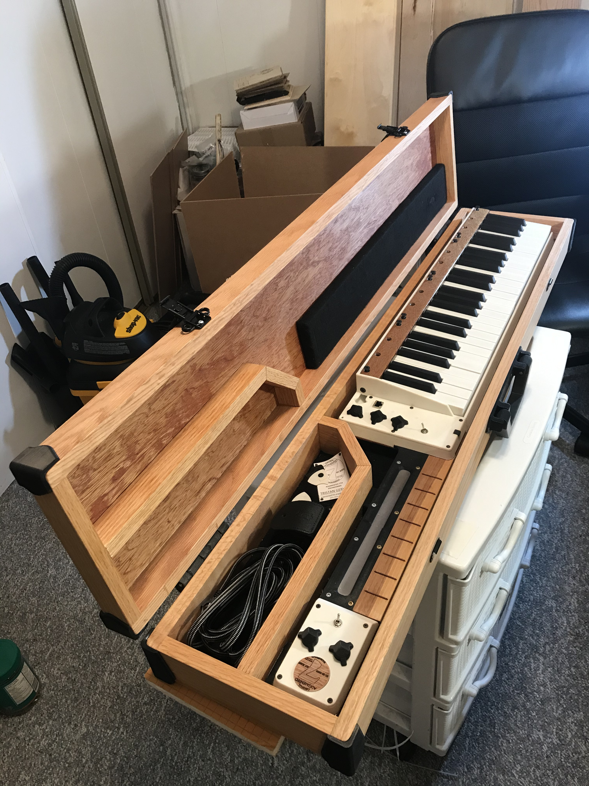

Keytar
Overview
A COVID passion project. The inspiration for this project came from the connection guitarists feel with their instrument. Playing a guitar can create an emotional bond between the player and the instrument, as the guitar is made from natural materials making each one unique. One can also feel the vibrations of the sound resonating against their body as one holds and plays the instrument. This connection can be strong enough for guitarists to anthropomorphize their guitars such as calling them "she", giving them names and swinging them around the stage as if they were dancing with it. Being a keyboard player, I always felt there was a lack of that same connection between keyboardists and their instrument. Existing keytars begin to solve this problem by allowing keyboardists to move about the stage while playing their instrument, but lack any sort of natural uniqueness by way of organic materials. Most keytar designs have sharp, angular, injection molded plastic bodies, making them seem lifeless.
injection molded plastic bodies, making them seem lifeless.Another source of inspiration taken from guitarists is a technique called "bending". This technique allows guitarists to create expressive pitch increases by adding tension to the strings by bending them upward. This adds a very human element to their performance, even to the point of defining the "sound" of many famous guitarists. I wanted to incorporate a similar concept into the keytar, allowing keyboardists to add their own unique and expressive flairs while playing.
My goal was to create an instrument for keyboardists to be able to emotionally connect with, by not only making it portable, but giving the design more natural curves and materials, and adding some expressive functionality.

Challenges & Solutions
Incorporating wood
Ideally, this product would be made from a solid piece of wood, as guitars are, to give the most natural feel, but I didn't have the milling capabilities at the time to pull off this construction. This is why the base of the keytar was made from a piece of Baltic birch plywood, where the rest of the components could be fastened to.
There are a couple of other pieces of wood that make the design more organic. A small piece of trim above the keys used as a structural and aesthetic element, as well as a fret board on the neck of the keytar. Due to the nature of the way a keytar is held, the right hand plays high notes on the keyboard, while the left hand is left mostly unused, other than some setting adjustments, and operating a bending control. In my design, I wanted to retain the ability of the left hand to play bass notes, which is why I implemented a fretboard with capacitive frets to play bass notes. This fretboard was made from a solid piece of birch.
The most significant use of wood in the project is the carrying case, made from red oak boards and plywood. The case clamshells like a regular guitar case, and has some space for accessories.

Note Bending
Existing keyboards use bend wheels, which are controls that allow players to bend notes manually using their left hand. This distracts the left hand from other functions, and is very dissimilar from the guitar bend, as it is performed by the same hand that is playing the note. To give the keytar player a similar experience, I incorporated capacitive sensors that detect the location of the player's finger on the key. A player can then roll their finger over the key to create a bending effect, just like a guitar player.
Technical Details
Each octave contains 12 keys with capacitive sensors for note detection and bending functionality. They are all controlled by a microcontroller under the keys. Four of these are daisy chained together on an I2C bus to form the keybed. They are then connected to a fifth microcontroller that manages the neck.
All plastic components are 3D printed from ABS and acetone vapor smoothed to achieve an injection molded like finish.